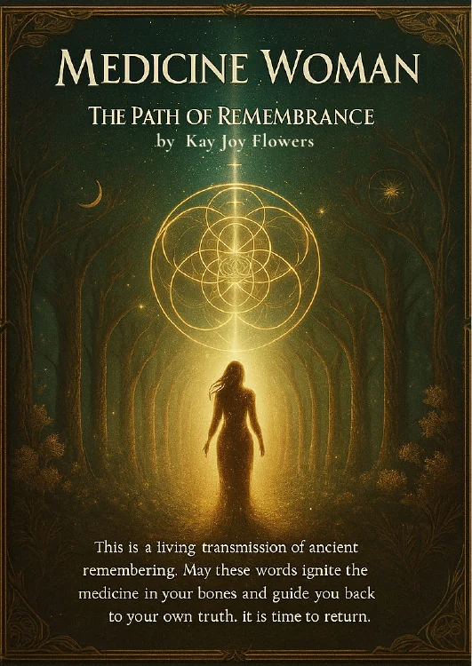
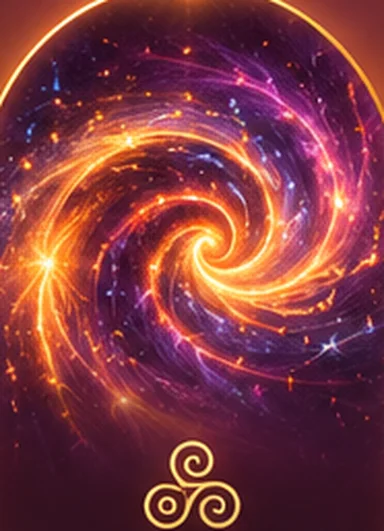
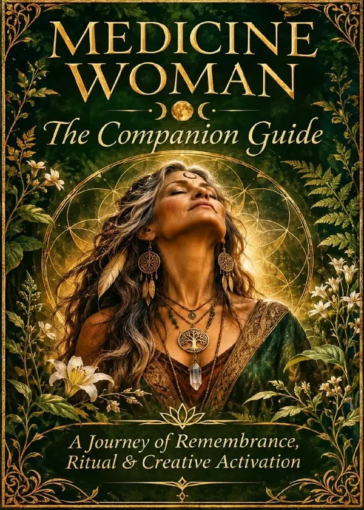
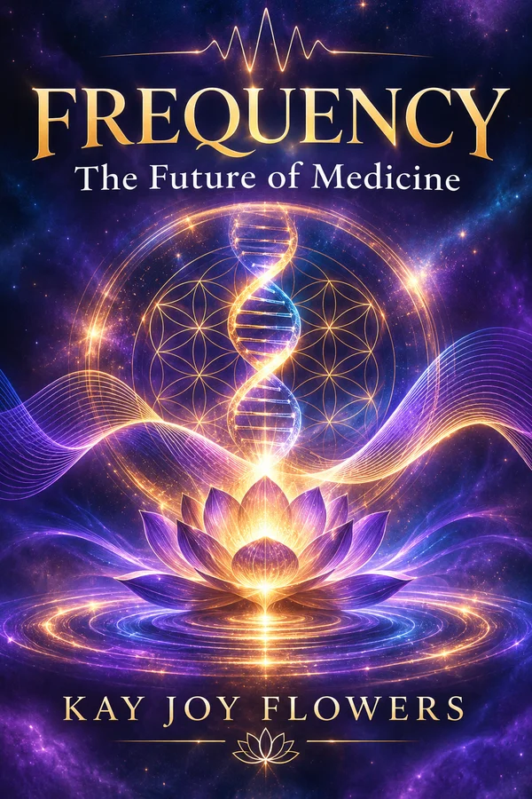
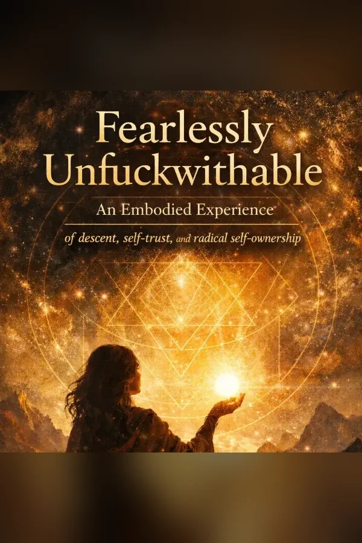
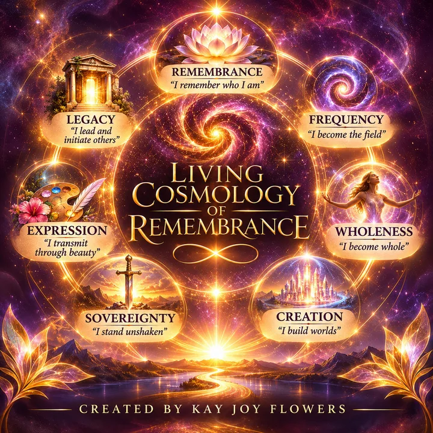

Medicine Woman
A return to remembrance, intuition and the wisdom carried within.
US$33 · digital book
Discover the bookBooks, practices and experiences for exploring who you are, how you live, and what becomes possible.
Explore the booksFind your doorwaySeven interwoven pathways of remembering, each a doorway into a more whole, sovereign and creative way of living.
The Living Cosmology of Remembrance is the philosophy that connects every book, practice, creative work and experience here. Its gateways are not steps to complete, but frequencies to embody — each one a deepening of the self that makes the next possible.
I remember who I am.
I become the field.
I become whole.

I build worlds.
I stand unshaken.
I transmit through beauty.
I lead and initiate others.
Each book opens a different doorway. Begin wherever something calls to you.

A return to remembrance, intuition and the wisdom carried within.
US$33 · digital book
Discover the book
Daily rituals to weave freedom into your life. A sacred workbook designed to bring the Medicine Woman teachings off the page and into your daily life.
US$33 · instant digital download

Explore the meeting place of sound, energy, science and healing.
US$33 · PDF and EPUB
Discover the book
An invitation to reclaim your authority and live from your own centre.
Book US$33 · Sovereignty Bundle US$77
Discover the bookMore books in the Living Cosmology of Remembrance collection → Explore the full library

Conversations that open a doorway into the work, one series at a time. Series One, Who ARE You?, begins with Episode 001: Who Are You Beneath the Roles You've Been Playing?
Visit the podcastEpisode 001 show notes
Hosted by AI voices, Iris and Jonah, discussing Kay's published writing.
Read. Reflect. Practise. Explore. Follow what speaks to you.
Explore the Living Cosmology of Remembrance and its companion experiences.
Enter the librarySimple practices and guided experiences for returning to yourself.
Explore the practicesExplore a personalised energetic reflection experience with Kay.
Discover the experienceNo guru. No borrowed authority. Just invitations to remember what you already carry and explore what becomes possible from there.
Meet KayAuthor, educator, creator and lifelong explorer of the questions that change how we see ourselves and our world.
Across books, practices and experiences, Kay's work invites recognition, remembrance and the freedom to become the author of your own life.
Read Kay's storyOccasional letters on sovereignty, the nervous system and remembering who you are.
Join the letters